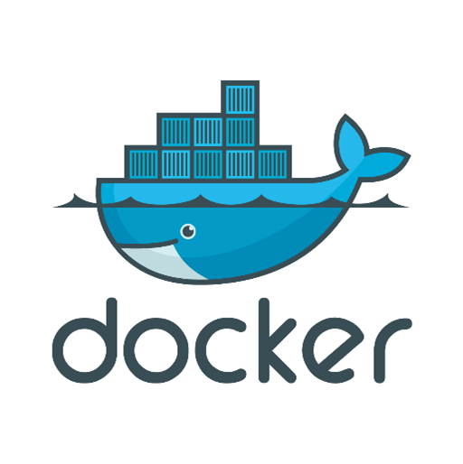
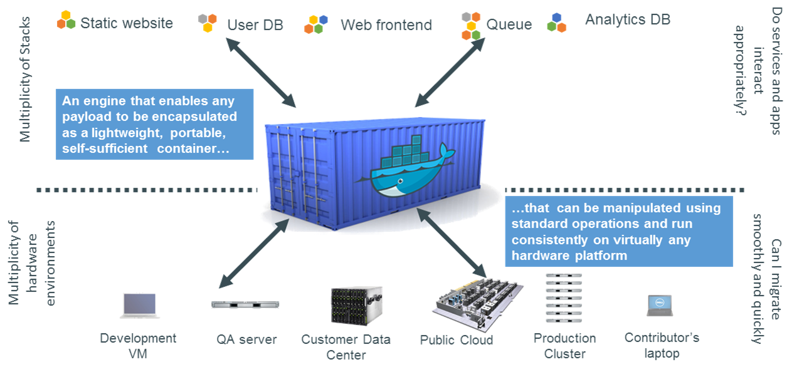
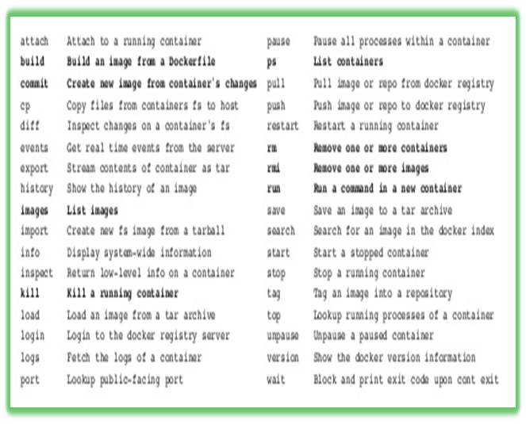
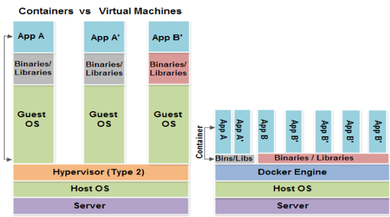

Docker 介绍
By Darren Zhao
What is Docker?
What is Docker?
"An open platform for distributed applications for developers and sysadmins"
A system managing containers
Most popular PAAS solution
What Docker Can do
- Run a single application or service
- Share your image with others via register server or tar ball
- Can be used on popular cloud platforms: aws, Google Compute Engine, Rackspace
What it cannot?
- It cannnot run windows applications
- Cannot run with Linux kernel less than 3.8
Why Docker
- Applications, services, libraries Matrix
- Software and hardware matrix
Why Docker
How Docker works
Docker Architecture
- Docker Engine
- CLI: docker, frontend to accept user input and send commands to daemon
- docker daemon: the backend manages containers
- docker registry: a container that manages docker images
- Docker image: layered fs (aufs)
- Container: a running instance of image. Formerly use lxc, completely rewritten now
- Docker hub: cloud service hosts/share docker images, like github to git
- Kitematic: Docker GUI client
Docker Images

- a read-only layer
- Supports different backends
- vfs: folders, no copy-on-write support, recursive copy
- devicemapper: thin-provisioned vhd, filesystem level layers
- btrfs: filesystem level layers
- aufs: file level layers
Docker Container
- First of all a Linux container: Utilize Linux Cgroups and Kernel namespace
- Supports different backends
- native docker lib: libcontainer
- libvirt
- lxc
- systemd-nspawn
- fs: a writable layer
Docker Container - Life Cycle
- Conception: Build an Image from a Dockerfile
- Brith: Run a container
- Reproduction: Commit (persist) a container to a new image
- Sleep: Kill a running container
- Wake: Start a stopped container
- Death: RM (delete) a stopped container
- Extinction: RMI a container image (delete image)
Docker file
- Like a Makefile (shell script with keywords)
- Extends from a Base Image
- Results in a new Docker Image
- lists the steps needed to build an images
Docker network
- Veth based: eth0 inside container and vethxxxx in host
- Bridge docker0
- Not directly tunable
➜ ~ pid=`docker inspect -f '{{.State.Pid}}' $container_id` ➜ ~ ln -s /proc/$pid/ns/net /var/run/netns/$container_id
Docker commands
Docker Community & Activity
More About Containers
Technology set
- namespaces: process isolation
- cgroups: resource limitation
- capabilities: process privilege
- selinux/apparmor: security enforcement
- netlink: configure network
- netfilter: network perimeter
- ...
namespace
Restrict your view of the system. Set on process clone
- PID (CLONE_NEWPID)
- IPC (CLONE_NEWIPC)
- Mounts (CLONE_NEWNS)
- Networks (CLONE_NEWNET)
- UTS - uname output (CLONE_NEWUTS)
- User (CLONE_NEWUSER)*
Cgroups
- Allocate resources—such as CPU time, system memory, network bandwidth, or combinations of these resources—among user-defined groups of tasks (processes) running on a system
- By associate a set of tasks with a set of parameters for one or more subsystems
Cgroups - subsystems
A *subsystem* is a module that makes use of the task grouping facilities provided by cgroups to treat groups of tasks in particular ways. A subsystem is typically a "resource controller" that schedules a resource or applies per-cgroup limits, but it may be anything that wants to act on a group of processes, e.g. a virtualization subsystem.
~]# lssubsys -am
cpu,cpuset,memory /cgroup/cpu_and_mem
net_cls
ns
cpuacct
devices
freezer
blkio
Hypervisor vs Docker
OS containers vs application container
LXC/LXD: Full system virtualization, target IAAS
root@lxcvm1:/# ps aux
USER PID %CPU %MEM VSZ RSS TTY STAT START TIME COMMAND
root 1 0.2 0.0 33252 2528 ? Ss 17:29 0:00 /sbin/init
root 157 0.0 0.0 19476 392 ? S 17:29 0:00 upstart-udev-bridge --daemon
root 184 0.0 0.0 49268 1332 ? Ss 17:29 0:00 /lib/systemd/systemd-udevd --daemon
syslog 249 0.0 0.0 255844 3200 ? Ssl 17:29 0:00 rsyslogd
root 264 0.0 0.0 15392 788 ? S 17:29 0:00 upstart-socket-bridge --daemon
root 267 0.0 0.0 15276 644 ? S 17:29 0:00 upstart-file-bridge --daemon
root 299 0.0 0.0 10232 2412 ? Ss 17:29 0:00 dhclient -1 -v -pf /run/dhclient.eth0.pid -lf /var/lib/dhcp/dhclient.eth0.leases eth0
Docker: application container, target PAAS
root@8adfb91c144b:/# ps aux
USER PID %CPU %MEM VSZ RSS TTY STAT START TIME COMMAND
root 1 0.5 0.0 18172 1840 ? Ss 09:40 0:00 /bin/bash
root 17 0.0 0.0 15564 1144 ? R+ 09:40 0:00 ps aux
What Container means to us
- Fast/resilliant testing/build infrastructure
- Higher density VMs
- A new choice for NFV